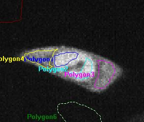
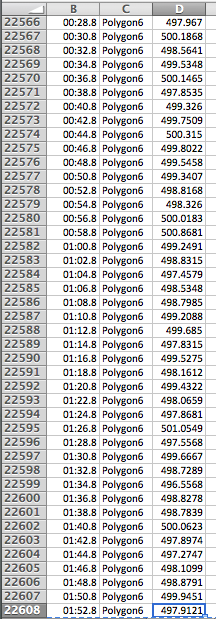

Automating FRAP data analysis using Django and Scipy
@eleyine
What is FRAP anyway?


x 369 and counting!
Do you keep them all in one Excel file?
369 sheets, the horror.
I also need to keep track of meta data
- Date: one sheet per date?
- Mutant: one file per mutant?
- Type of FRAP
- ... and many more
halp
And, what if I change the way I analyse this raw data?
Do I have to change +369 formulae on Excel?
It is written in Python.
- Readable and expressive.
- Open-source, stable and portable.
- Wide array of scientific libraries and packages.
It is an MTV framework.
- Models : abstract representations of data.
- Templates : how data is presented.
- Views : which data is presented.
Example Model
class FRAPMovie(models.Model):
class Meta:
unique_together = ['mutant', 'clone', 'category']
ordering = ['category', 'mutant', 'clone']
CATEGORIES = (
('E', 'Export'),
('I', 'Import')
)
category = models.CharField(max_length=1, choices=CATEGORIES, default='I')
mutant = models.ForeignKey('Mutant', related_name='movies')
# meta data
clone = models.IntegerField()
filename = models.CharField(max_length=20)
date = models.DateField()
notes = models.TextField(default="No notes provided.")
class FRAPMovie(models.Model): # continued...
# frame-related info
bleached_frame_index = models.IntegerField(default=22,
help_text='Provide the plane number of the timeframe right before'
'the bleach i.e. just before the ratio makes a big jump')
bleached_frame_number = models.IntegerField(default=2,
help_text='Provide the number of bleached frames.')
baseline_frame_number = models.IntegerField(default=2,
help_text='Provide the number of frames immediately following the '
'photobleaching whose average intensity should be normalised to 0.')
# boolean switches
is_modified = models.BooleanField(default=False)
is_valid = models.BooleanField(default=True)
is_visible = models.BooleanField(default=True)
# normalisation-related variables
ceiling = models.FloatField(default=-1)
baseline = models.FloatField(default=-1)
Example Template
<table>
<tr>
<th>Date</th>
<th>Category</th>
<th>Mutant</th>
<th>Clone</th>
<th >Description</th>
</tr>
<tbody>
{% for movie in movies %}
<tr">
<td>{{movie.date}}</td>
<td>{{movie.get_category_display}}</td>
<td>{{movie.mutant.name}}</td>
<td>{{movie.clone}}</td>
<td>{{movie.notes}}</td>
</tr>
{% endfor %}
</tbody>
</table>
Easy Database Management
- No need to worry about mastering SQL or know a great deal of HTTP or XML syntax.
- Django Administration interface.
Example Model
class Mutation (models.Model):
class Meta:
ordering = ['name']
name = models.CharField(max_length=12, unique=True)
position = models.IntegerField(help_text='Position of
the mutated codon in the DNA sequence.')
original_codon = models.CharField(max_length=3)
mutated_codon = models.CharField(max_length=3)
def get_plasmid_position(self):
return self.position + PLASMID_SHIFT
def __unicode__(self):
return '%s: %s->%s at %i (%i)' % (self.name,
self.original_codon, self.mutated_codon,
self.position, self.get_plasmid_position())
class Mutant(models.Model):
class Meta:
ordering = ['name']
name = models.CharField(max_length=20)
mutations = models.ManyToManyField('Mutation',
related_name='mutants')
description = models.TextField(max_length=1000,
default='No description provided.')
def get_name(self):
return '-'.join([m.name for m in self.mutations.all()])
@property
def n_import_movies(self):
n_movies = FRAPMovie.objects.filter(mutant=self)
.filter(category='I')
.filter(is_valid=True).count()
return n_movies
Example View
def show_movies(request):
movies = FRAPMovie.objects.all()
context = {
'movies': movies
}
return render(request, 'movies/all.html', context)
Fitting Curves with Scipy
def two_phase_association(X,
plateau=0, k_fast=0, k_slow=0, percent_fast=0, Y0=0):
span_slow=(plateau-Y0)* (100-percent_fast)*0.01
span_fast=(plateau-Y0)* percent_fast *0.01
Y = Y0
+ span_fast * (1 - np.exp(-k_fast * X))
+ span_slow * (1 - np.exp(-k_slow * X))
return Y
def residuals(p, y, x):
# plateau, k_fast, k_slow, percent_fast, y0 = p
return y - two_phase_association(x, *p)
How to use leastsq
# from scipy.optimize import leastsq
def fit_parameters(self):
series = self.normalised_series
x_data = np.array([s[0] for s in series])
y_data = np.array([s[1] for s in series])
guess = self.guess_parameters
popt, _ = leastsq(residuals,
guess, args=(y_data, x_data))
self.plateau, self.k_fast, self.k_slow, self.percent_fast =
tuple([float(i) for i in popt])
Automation is awesome! But...
Make sure it's worth the effort!

Thanks!
@eleyine